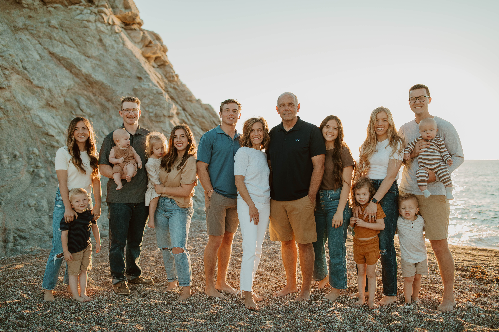

Mission Statement: My goal right now is to go on my mission for the Church of Jesus Christ of Latter-Day Saints for a year and a half. I want to go spread the good news of the gospel and teach of the peace that comes from it. I have been called to the Bahia Blanca Argentina Mission and could not be more excited. After my mission, I plan on coming back to BYU and finishing my degree in Marketing. After I graduate, I plan on starting and operating my own business. And during that time, I hope to meet my best friend and get married in the temple for all time and eternity. But my main goal through all of this, is becoming a better disciple of Jesus Christ and living the way he did and taught. I want to bless other people's lives and serve as Christ would.

My Story: I was born and raised in Thatcher, Arizona. I am the last kid of five and am also a twin! My childhood consisted of playing with cousins, spending my summer days on Mt. Graham, going on horseback rides in the desert, and playing games in the orchard next to my house. Music has also been a big part of my life. I enjoy playing the piano and singing. I played tennis and volleyball in high school and loved to be active. My favorite thing in the world is my family. I have six nieces and nephews and love to spend as much time with them. I feel very blessed to have them in my life. And for the past six years, my twin and I have owned our own photography and videography business. I love being able to create and meet new people. Our job has taken us to many new places and given us many opportunities, which I am very grateful for. I have also had the chance to work for BYU Photo and have loved my time and experience there. I feel very blessed for the life I have been given and for the people in my life. I owe it all to my Heavenly Father and know everything good in the world comes from him.
Extra Information About Me:
-
Education
- Thatcher High School Diploma/Valedictorian
- Current Student at Brigham Young University
-
Experience
- Owned own Photography/Videography Business 6+ Years
- Currently a Student Photographer at BYU Photo
- Skills
- Leader
- Hardworking
- Creative
- Responsible
- Openminded
- Teachable
Back to top
Contact Me @ (928)792-7275 | e.s.filmandphoto@gmail.com